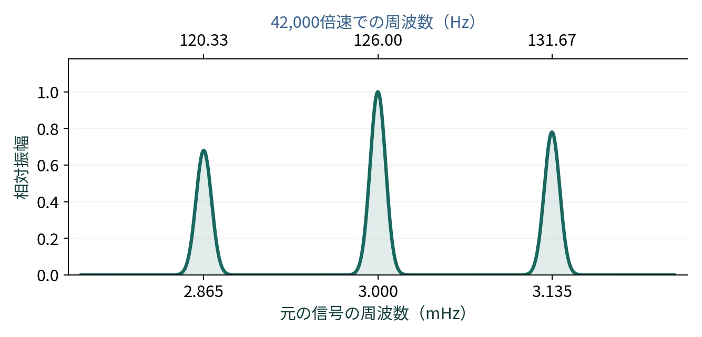

第43章 太陽の五分を、一音の高さに折りたたむ
太陽の振動を4万倍速にして聴く。時間を縮めると、何が保存され、何が変わるか。
この章で学ぶこと
- 観測値が音になるまでの可聴化の処理を追う
- 時間伸縮で周波数の比は保たれ、差は変わることを計算する
- 星の振動の「大周波数間隔」から音速の情報を読む
耳元に届いた126 Hzは、どこで鳴ったのか
NASAの太陽の可聴化を再生すると、低い持続音がわずかに揺れる。試みに再生を止め、その低さが何の単位だったか考えてみよう。元の観測値は、探査機SOHOが光のスペクトル線のドップラー偏移から求めた、太陽表面付近の視線方向の速度である。これをスピーカーで再生した部屋では空気の圧力が変わる。二つの場所には違う物理量があり、両者を結ぶのは時系列と変換規則だ。太陽内部の圧力波には物質を介して伝わる過程があり、惑星間を経て届いた観測情報は光が運んだ。
NASAが解説する例では、40日分の観測を用い、円盤面の速度を平均し、探査機自身の運動などを補正する。さらに約3 mHz付近を選び、欠測の補間を施し、時間を42,000倍速にした。空間平均もフィルターである。片側がこちらへ近づくとき、別の領域が遠ざかれば、平均値は小さくなる。表面を細かく分割する振動ほど相殺されやすい。ヘッドホンから聞こえる一音には、どの空間尺度と時間尺度を残すかという、観測者の決定がすでに含まれている。
時間を縮めると、何が保存されるか
秒単位の観測時間を 、元の周波数を 、縦軸の振幅を 、開始時の位相を と書こう。等速変換を 、速度倍率を と決める。元の成分 を代入すれば
したがって なら、 mHzは Hzに移り、元の約333秒の一周期が約7.94 msに収まる。40日は約82.3秒に圧縮される。二周波数の比は で不変だが、差は に変わる。したがって時間伸縮は音程比を保ったまま、拍の速さもうなりの速さも一緒に動かす。標本化の章で扱った時刻の目盛を、一つの作品の形式にまで拡張したことになる。

図の隣接間隔は元の目盛で0.135 mHz、上では5.67 Hzである。三本の高さを同じにしても等比の和音にはならない。中央の上下で周波数差は等しいが と は異なるからだ。両隣だけを加えれば差は11.34 Hzになる。どの成分を混ぜたかによって、周期的な揺れを何回と数えるかが変わる。模擬図から読める線間隔を、実録音から直接読んだ値と混同しないよう、自分のノートにも「モデル」と記そう。
星を横切る時計を、線の間隔から読む
なぜ単独の線より、隣の線までの距離が重要なのか。まず一定の速さ の波が長さ の領域を往復する場合を考える。一往復に要する時間は 。固有振動では往復後の位相が元に戻るため、往復中の周期数は整数となる。隣接次数ではその整数が1増える。従って周波数差は である。共鳴の章の弦と同じ計算が、星の音速を測る出発点になる。
星の半径を 、中心からの距離を 、局所音速を とし、片道の伝播時間を と書く。低い角次数の高次音響モードで、境界での位相補正 の隣接次数間の変化が小さいという漸近近似を置く。動径次数 の振動数を とすれば、往復の位相条件は 。隣の式から引くと、大周波数間隔 を得る。これは太陽全体を一様な棒に置き換えた厳密解ではない。近似が効く範囲を、実データの複数の次数で検査する。
仮に µHzなら 秒、約62分。ここから分かるのは音速の逆数の積分である。層ごとの を自由に変えられるなら、一つの層の遅れを別の層の速さで補える。音速分布を細かく知るには、別のモードが重みを変えて内部を調べることを利用する。この不定性は太鼓の形の章の逆問題とも響き合う。
星が合奏に入る瞬間を聴く
ジェラール・グリゼ《Le Noir de l’Étoile（星の黒）》では、聴衆を六人の打楽器奏者が囲む。プログラムの最初の「窓」では、ヴェラ・パルサーの周期が奏者たちへ受け渡される。こちらの時計を刻むのは回転する中性子星に由来する電磁波のパルスである。太陽の音響モードと聴き比べよう。片方では表面の速度変動を時間圧縮し、もう片方では天体の周期を人間の合奏の時間に招き入れる。実演資料の構成表で「第一の窓」と「想像上のパルサー」の位置を探し、周期を聴き取れた瞬間と、その周期を発した音源が替わったと感じた瞬間を別々に記すとよい。
やってみよう
作曲課題と解答例。 周期5秒のパルスを毎分96拍に、3 mHzの振動を126 Hzにしたい。一つの時間倍率で両立するか。目標の拍周期は60/96=0.625秒なので前者は8倍、後者は42,000倍を要する。解は二層に分け、同じ開始時刻で重ねること。譜面にはそれぞれの倍率を書く。同一の時計が演奏全体を支配するという仮定を外した時点で、作曲者は観測データから新しい時間関係を作っている。
ここだけ押さえる
- 42,000倍速にすると、3 mHz は 126 Hz になる。
- 時間伸縮は音程の比を保つが、うなりや拍の速さも一緒に変える。
- 可聴化された一音には、どの成分を残すかという観測者の決定が含まれている。
この章の資料
- NASA「Sounds of the Sun」 — 解説音声と可聴化そのものを区別して再生する。記事末尾で観測量・処理・倍率を確認できる。
- Stanford Solar Center「Sounds of solar oscillations」 — 単一モード、三つのモード、複数の低次モードを順に聴く。同じ観測から選ぶ成分を替える実例。
- M. S. Lundkvist『Asteroseismology of solar-like stars』 — 第1章、式1.14–1.15に大周波数間隔と伝播時間の関係がある。まず図1.5とその軸を読む。
- Les Percussions de Strasbourg《Le Noir de l’Étoile》 — 初演団体の作品資料。四つの「窓」をたどり、どこで天体と器楽の役割が替わるか確かめる。